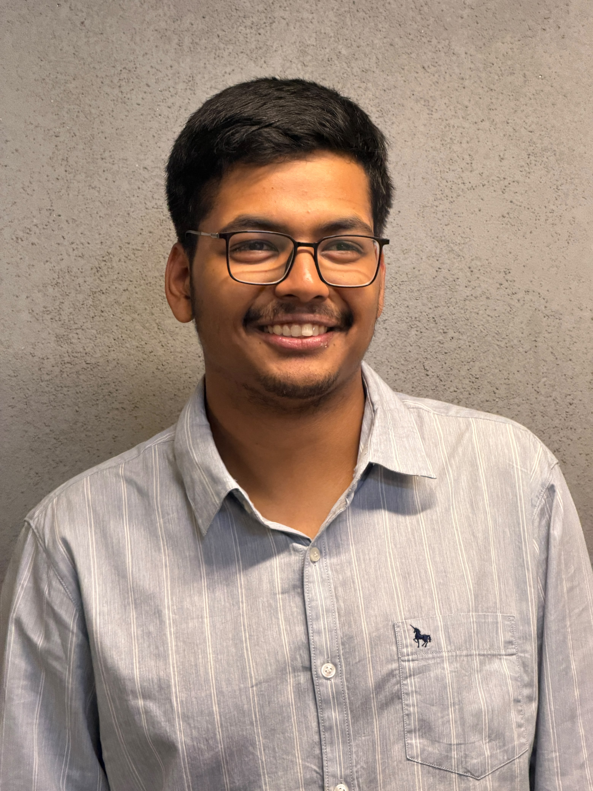

I am someone who is still figuring things out, but I am determined to keep moving forward. I am curious, ambitious, and genuinely interested in understanding how things work rather than simply learning things for the sake of knowing them. As a computer science student, I want to build strong fundamentals, become a better problem solver, and eventually create things that are useful in the real world. I enjoy exploring different areas of technology, from programming and web development to open source, AI, and app development. I believe that becoming good at something requires consistency, experimentation, and being willing to struggle through the parts that don't come easily. But I don't want my college life to be defined only by academics or a career. I want to meet interesting people, build genuine friendships, collaborate, try things outside my comfort zone, and make memories that stay with me long after college ends. At the end of the day, I am a work in progress — someone trying to become more capable, more independent, and a better version of myself while making sure I actually enjoy the journey along the way.
At SST, I want to make the most of my college years by growing both personally and professionally. I want to build strong technical skills, become a better problem solver, work on meaningful projects, and gain real-world experience that prepares me for my career. At the same time, I want to build genuine connections with my peers, learn from people around me, collaborate on new ideas, and develop relationships that last beyond college. More than just academic or career achievements, I want to create memories, try new things, step outside my comfort zone, and enjoy the journey. By the time I graduate, I hope to leave SST not only with strong skills and a good career foundation, but also with meaningful friendships, valuable experiences, and memories that I can look back on with pride and happiness.